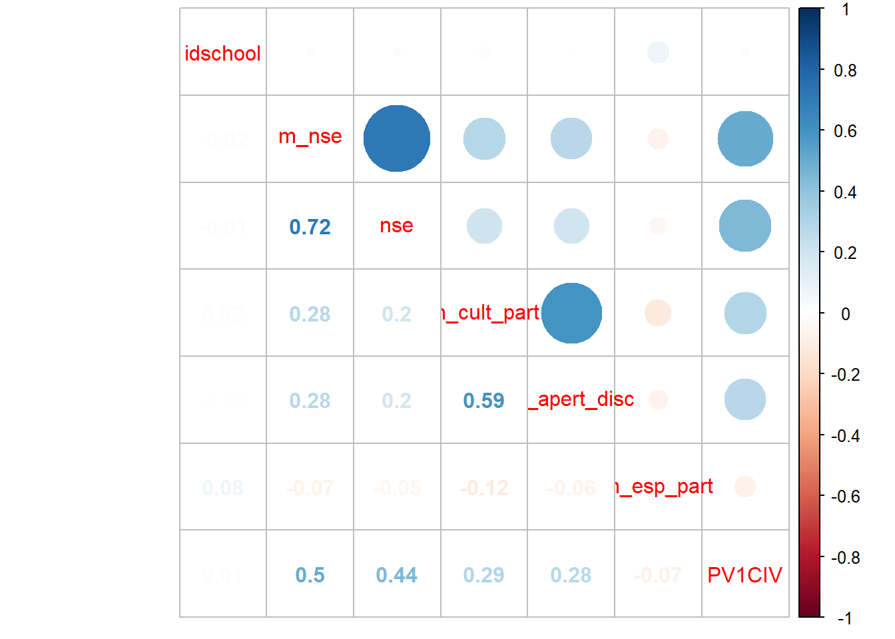

pacman::p_load(lme4,
reghelper,
haven,
descr,
stargazer,
ggplot2, # graficos
dplyr, # manipulacion de datos
texreg, # tablas lme4
sjPlot,
corrplot
)load(file="../input/data/proc/data.Rdata")summary(data)## PV1CIV S_GENDER nse cult_part
## Min. :179.4 Min. :0.000 Min. :-2.7000 Min. :17.22
## 1st Qu.:419.3 1st Qu.:0.000 1st Qu.:-0.7000 1st Qu.:45.66
## Median :492.2 Median :1.000 Median :-0.0100 Median :53.75
## Mean :488.7 Mean :0.501 Mean : 0.1152 Mean :54.90
## 3rd Qu.:559.9 3rd Qu.:1.000 3rd Qu.: 0.9300 3rd Qu.:68.37
## Max. :782.7 Max. :1.000 Max. : 2.4900 Max. :68.37
## apert_disc rel_prof rel_est S_ABUSE
## Min. :16.67 Min. :18.78 Min. :22.69 Min. :37.04
## 1st Qu.:46.53 1st Qu.:45.48 1st Qu.:39.78 1st Qu.:37.04
## Median :50.75 Median :53.24 Median :50.19 Median :50.42
## Mean :52.44 Mean :54.05 Mean :49.20 Mean :49.48
## 3rd Qu.:58.96 3rd Qu.:64.54 3rd Qu.:56.63 3rd Qu.:56.17
## Max. :78.16 Max. :71.68 Max. :68.18 Max. :87.38
## esp_part idschool m_nse m_cult_part
## Min. :20.22 Min. :1001 Min. :-1.37714 Min. :39.32
## 1st Qu.:41.21 1st Qu.:1046 1st Qu.:-0.48930 1st Qu.:52.32
## Median :48.22 Median :1090 Median :-0.01757 Median :55.06
## Mean :49.14 Mean :1091 Mean : 0.11523 Mean :54.90
## 3rd Qu.:56.86 3rd Qu.:1136 3rd Qu.: 0.50692 3rd Qu.:57.35
## Max. :70.79 Max. :1178 Max. : 1.97308 Max. :63.50
## m_apert_disc clima_prof clima_est mal_clima
## Min. :36.89 Min. :36.27 Min. :38.59 Min. :37.04
## 1st Qu.:49.47 1st Qu.:51.73 1st Qu.:45.79 1st Qu.:47.70
## Median :52.53 Median :53.84 Median :48.83 Median :49.55
## Mean :52.44 Mean :54.05 Mean :49.20 Mean :49.48
## 3rd Qu.:55.44 3rd Qu.:56.76 3rd Qu.:52.25 3rd Qu.:51.05
## Max. :63.44 Max. :66.72 Max. :62.08 Max. :55.76
## m_esp_part
## Min. :20.22
## 1st Qu.:41.70
## Median :48.22
## Mean :49.14
## 3rd Qu.:55.59
## Max. :70.79png("../output/graphs/histograma.png",
width = 15,height = 15,units="cm",
pointsize=12,bg="white",res=300)
hist(data$PV1CIV)
dev.off()## png
## 2basecor<-select(data,m_nse, nse, m_cult_part, m_apert_disc, m_esp_part,m_nse, PV1CIV)## Adding missing grouping variables: `idschool`datacor<-cor(basecor)
datacor <- corrplot.mixed(datacor)
png("../output/graphs/corrplot.png",
width = 15,height = 15,units="cm",
pointsize=12,bg="white",res=300)
corrplot.mixed(datacor)
dev.off()## png
## 2results_0 = lmer(PV1CIV ~ 1 + (1| idschool), data = data, REML=F)
save(results_0,file = "../output/graphs/model_nulo.Rdata") reghelper::ICC(results_0)## [1] 0.3563821# Model 1: nivel
results_0 = lmer(PV1CIV ~ 1 + S_GENDER + nse + (1 |idschool), data = data, REML=F)
results_1 = lmer(PV1CIV ~ 1 + S_GENDER + nse + m_nse + (1 |idschool), data = data, REML=F)
# Model 2: variables nivel 2 referidas a la participaciCB3n y discusiCB3n
results_2 = lmer(PV1CIV ~ 1 + m_cult_part + m_apert_disc + m_esp_part + (1 | idschool), data = data, REML=F)
# Model 3: variables nivel 2 referidas al clima escolar
results_3 = lmer(PV1CIV ~ 1 + clima_prof + clima_est + mal_clima + (1 | idschool), data = data, REML=F)
# Model 5: todas las variables nivel 2
results_5 = lmer(PV1CIV ~ 1 + m_cult_part + m_apert_disc + clima_prof + clima_est + mal_clima + m_esp_part + (1 | idschool), data = data, REML=F)
# Model 6: variables nivel 1 y nivel 2
results_6 = lmer(PV1CIV ~ 1 + S_GENDER + nse + m_nse + m_cult_part + m_apert_disc + clima_prof + clima_est + mal_clima + m_esp_part + (1 | idschool), data = data, REML=F)
# Model 7: pendiente aleatoria
results_7 = lmer(PV1CIV ~ 1 + S_GENDER + nse + m_nse + m_cult_part + m_apert_disc + clima_prof + clima_est + mal_clima + m_esp_part + (1 + nse | idschool), data = data, REML=F)
# Model 8: pendiente aleatoria e interacciCB3n entre niveles
results_8 = lmer(PV1CIV ~ 1 + S_GENDER + nse*m_nse + m_apert_disc + m_cult_part + m_nse + clima_prof + clima_est + mal_clima + m_esp_part + (1 + nse | idschool), data = data, REML=F)library(webshot)
stargazer(list(results_0, results_1,results_2,results_3,results_5,results_6), type="html", out = "../output/graphs/reg1.html")| Dependent variable: | ||||||
| PV1CIV | ||||||
| (1) | (2) | (3) | (4) | (5) | (6) | |
| S_GENDER | 19.705*** | 19.198*** | 18.572*** | |||
| (2.303) | (2.290) | (2.288) | ||||
| nse | 20.311*** | 16.069*** | 16.061*** | |||
| (1.417) | (1.489) | (1.490) | ||||
| m_nse | 44.533*** | 35.442*** | ||||
| (3.683) | (3.736) | |||||
| m_cult_part | 5.008*** | 5.544*** | 3.159*** | |||
| (1.194) | (1.225) | (0.830) | ||||
| m_apert_disc | 3.150*** | 3.655*** | 1.990*** | |||
| (1.105) | (1.119) | (0.746) | ||||
| m_esp_part | -0.264 | -0.019 | -0.075 | |||
| (0.389) | (0.351) | (0.229) | ||||
| clima_prof | -2.956** | -6.266*** | -1.129 | |||
| (1.249) | (1.250) | (0.909) | ||||
| clima_est | 6.382*** | 3.884*** | 0.090 | |||
| (1.350) | (1.285) | (0.902) | ||||
| mal_clima | -4.920*** | -3.770*** | -1.805* | |||
| (1.520) | (1.385) | (0.932) | ||||
| Constant | 475.430*** | 471.853*** | 61.262 | 576.073*** | 326.899*** | 345.433*** |
| (3.809) | (2.907) | (61.623) | (106.238) | (104.677) | (69.856) | |
| Observations | 4,846 | 4,846 | 4,846 | 4,846 | 4,846 | 4,846 |
| Log Likelihood | -28,044.750 | -27,989.500 | -28,143.990 | -28,143.920 | -28,125.620 | -27,965.440 |
| Akaike Inf. Crit. | 56,099.510 | 55,991.000 | 56,299.970 | 56,299.850 | 56,269.240 | 55,954.880 |
| Bayesian Inf. Crit. | 56,131.930 | 56,029.910 | 56,338.890 | 56,338.770 | 56,327.610 | 56,032.710 |
| Note: | p<0.1; p<0.05; p<0.01 | |||||
webshot("../output/graphs/reg1.html","../output/graphs/reg1.png")## PhantomJS not found. You can install it with webshot::install_phantomjs(). If it is installed, please make sure the phantomjs executable can be found via the PATH variable.NULL
save(results_6, file = "../output/graphs/results_6.Rdata")
save(results_7, file = "../output/graphs/results_7.Rdata")
save(results_8, file = "../output/graphs/results_8.Rdata")png("../output/graphs/interaccion.png",
width = 15,height = 15,units="cm",
pointsize=12,bg="white",res=300)
plot_model(results_8, type = "int")
dev.off()## png
## 2# R^2 Bryk & Raudenbusch (var idsc m0 - var idsc m1) / var idsc m0
## Nivel 1
r2_fit1a <- (3295.58 - 2010.94)/3295.58
r2_fit1a #0.389[1] 0.389807
## Nivel 2
r2_fit1b <- (3295.58 - 627.92)/3295.58
r2_fit1b #0.809[1] 0.809466